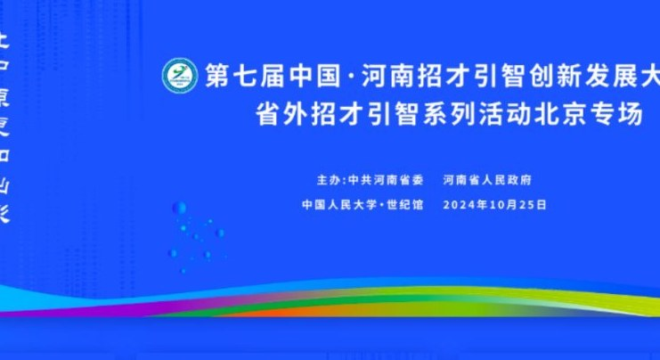

返回项目列表
 PROOF 01 · 上海专场
PROOF 01 · 上海专场
EVENT VISUAL SYSTEM
招才引智大会
招才引智大会
会展视觉系统
广聚天下英才 · 让中原更加出彩
河南招才引智创新发展大会省外招聘系列活动的整体视觉：一套版式语言跨城市延展——上海青绿、北京湛蓝、香港深蓝，从主 KV 到证件、桌位图、易拉宝、门头与倒计时，覆盖印刷打样到现场落地的全流程。
PROOF 01 · 上海专场

PROOF 02 · 北京专场